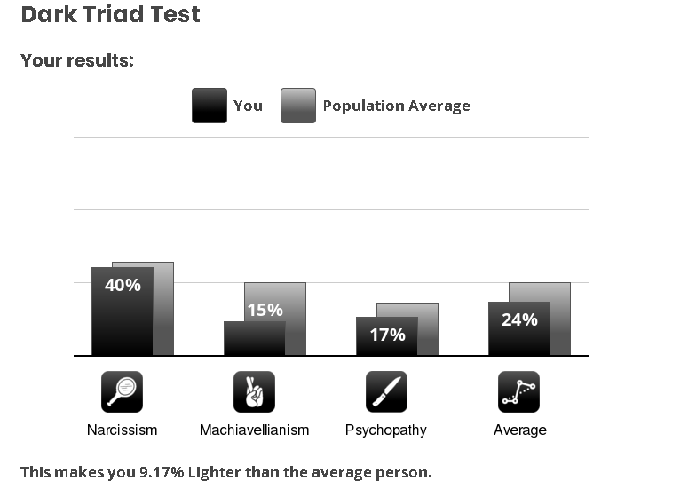

Literally watching the FIFA world cup final right now, I'm not gonna say I follow football that closely or any sport for that matter and honestly I couldn't even follow this world cup the way I would like to but regardless, I'm enjoying this final. I really would like Messi to win in which is probably his last world cup. Anyways, This week I have for you all, THE website to look up during those yawn-worthy lectures, a test you could make your girlfriend take and not a whole lot more but that's alright. Here it goes
The Things:
bored.com: A collection of the internet's best time-killers. This is THE website for you if you ever feel bored and have some time to kill and you despise scrolling as much as I do. From pointless fun to psych tests, mystery Riddles, multiplayer arenas and so so many things you haven't even heard of, it has something for whatever your vibe is.
Just out of curiosity I took this Dark Triad Personality Test and apparently my total Dark Triad score is 24% which makes me 9.17% Lighter than the average person. (My result)

This video by Adam Conover here (remember him from college humour) is why I'm watching so many older sitcoms right now and rewatching The Office for the 16th time. Basically sometimes you wanna go where everybody knows your name.
While watching the world cup I noticed these American ads are so much more creative than the ones we have here, they are so not in the face and blatant and just give you the message so subtly.
Also sometimes they teach you things, like this Airbnb Ad I saw, apparently the world got punk when jamaicans took their sound systems to the UK which I some research on and it isn't 100% accurate or anything considering The Ramones pioneered that sound all the way in NYC but it was cool to read that it had some influence on the scene in the UK!
That's it I don't have a lot this week. This was essentially the first week or at least 3 days of college, it was a drag I can already anticipate what I'm in for once I'm in the thick of it with classes every day next week. Oh and Messi my man, he didn't win but honestly though, the better team won today that's for sure. Spain totally dominated the whole time! Football, won. But that's it for this installment of your favorite newsletter, I'll see you in the next one, timely this time. ~~~